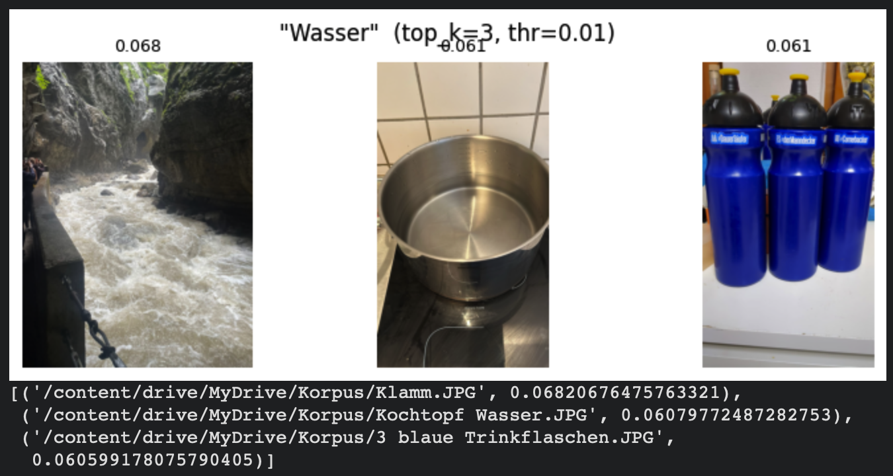
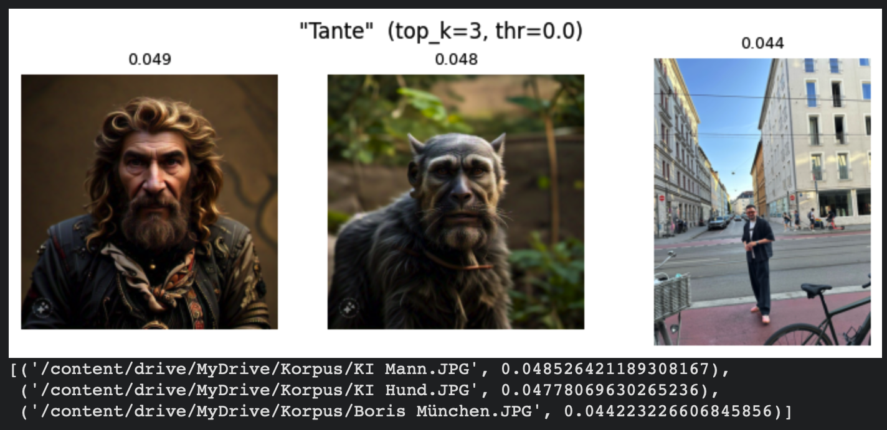
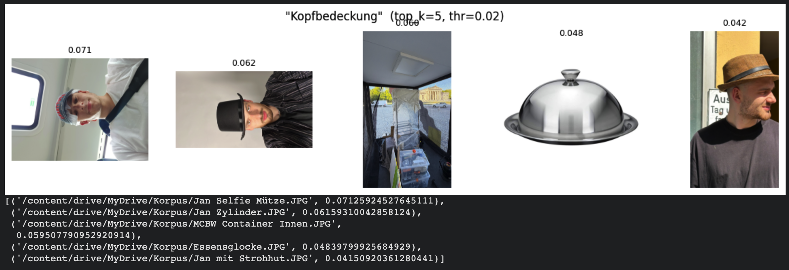
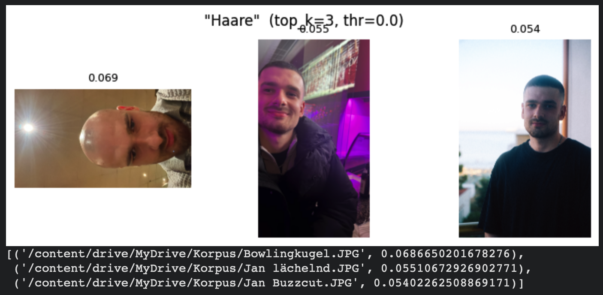

“Finding images with words — what the model finds and what it doesn’t.”
Abstract
This project implements a semantic image search engine over a curated archive of 80 images:
Memories with close friends mixed with everyday items, AI brainrot and a series of self-portraits.
A joint text-image embedding model (SigLIP) encodes every image once into a shared vector space;
these embeddings are cached so the system is fully reproducable without re-running the encoder.
At query time, a natural-language prompt is tokenized and embedded into the same space and
cosine similarity rnks all images, returning the top-k results through a lightweight Gradio interface.
No captioning or text generation is involved - the pipeline is pure retrieval. Through a documented
retrieval atlas of successfull and failed queries, the project examines how the model "sees":
where meaning aligns cleanly between words and images and where it breaks down. The result is a
wprking prototype and an honest account of the strenghts and limits of embedding-based retrieval.
Motivation & Corpus Statement
Motivation
When we search for a picture, we rely on meaning. A computer only has numbers. Instead of simply trusting a model i
wanted to to watch it succeed, hesitate and fail with interpreting human concepts. How different does "friendship" look
compared to a bussiness-meeting? What does the modell classify as an object a human can use as "headwear"?
The Corpus
The corpus consists of roughly four thematic components: human faces and bodies;
everyday objects such as cars, seating or clothing; people interacting with said
objects or with other people; and a set of contrast images — AI-generated figures,
ambiguous close-ups, and unusual concepts that rarely appear in any training
dataset. The idea behind this was to work out what the model focuses on, what it
confuses and what it may not understand at all.
Total images
80
Formats
.jpg, .png
Model
google/siglip-base-patch16-224
Approach
The pipeline is pure retrieval — no captioning, no generation. Each image is
embedded once into a vector (and cached in Google Drive). A text query
is embedded into the same space; cosine similarity ranks all
images, and the top‑k matches appear in a Gradio interface.
Fig. 1 — Retrieval pipeline: query and archive land in the same embedding space; cosine similarity ranks the matches.
Parameters.top‑k determines how many results are returned; the
threshold filters by minimum similarity. Since SigLIP cosine values lie within a narrow, low
band, the threshold was empirically calibrated to 0.0–0.08.
Results — Retrieval Atlas
Representative Documentation: Successes and Failures, with reasoning
Prompt 1: “Water” Success
top_k = 3 · threshold = 0.0

Observation. Successfully assigns “water” to a river, a cooking pot, and water bottles.
Rationale. An established, frequently trained concept: colour cues, wave patterns, and reflections give it a strong, well-defined embedding that sits close to visually matching images.
Prompt 2: “Aunt” Failed
top_k = 3 · threshold = 0.0

Observation. Comparably high similarity scores for unrelated AI images.
Rationale. A vague, relational concept: the model seems to connect “aunt” loosely to a human, but does not store it close to images with a clearly female appearance — the kinship meaning has no reliable visual anchor.
Prompt 3: “Head-wear” Mixed
top_k = 5 · threshold = 0.02

Observation. Succeeds with 3 out of 5.
Rationale Seems to understand the concept of "headwear" by locating 3 images of me
wearing items with a similar shape on my head. By choosing the dinner bell it prooves to disregard material.
The image of the container box is hard to explain, i suspect that the file name "container" might have had
an influence (since head-wear usually "contains" a head).
Prompt 4: “Hair” Mixed
top_k = 3 · threshold = 0.02

Observation Connects hair stronly with a human head
Rationale The concept of hair being attached to the head of a human and framing the face
seems to account for more than the general appearance, colour or structure of hair itself. It's ironic how
especially the imagine of my glizzening bald head rates closest to hair; but maybe I underestimate the model's
concept of humour.
Reflection
In retrospect, the experiment gave me valuable hands-on insight. I found it
particularly interesting that for very familiar concepts or subjects, surface
characteristics tend to be decisive, whereas for vaguer or less common concepts,
it is the associated concepts that carry more weight. Overall, both the corpus and
the model performed well. Across my series of tests, the parameters made relatively
little difference, yet it was still valuable to see what they are used for. A future
dataset could be designed specifically to explore these parameters further — for
example, a larger image set containing several very similar images.
Limitations
The system yielded only limited findings on ambiguity and composition. Overall,
the corpus was likely too small and too fragmented to reveal deeper or more
specific patterns.
Sources & References
Zhai et al. (2023), Sigmoid Loss for Language Image Pre-Training (SigLIP).
SigLIP model: google/siglip-base-patch16-224, Hugging Face.
Software: Hugging Face Transformers, Gradio, PyTorch, Google Colab.
Course materials: CompScie for Designers 2, starter notebook provided in class.
Image corpus: Taken by myself with a smartphone camera; Unsplash; AI generated Images: Perchance